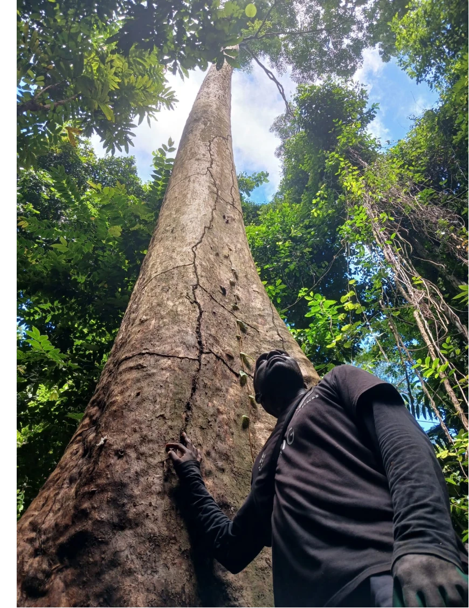
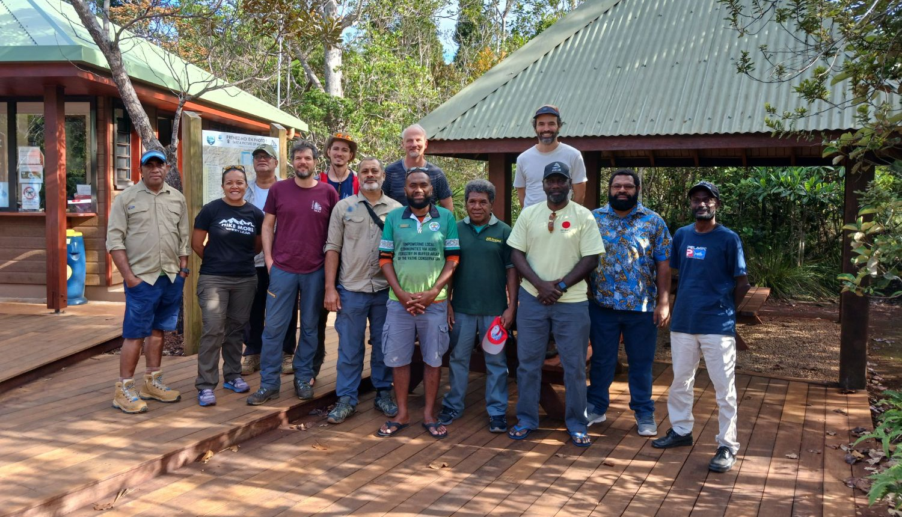
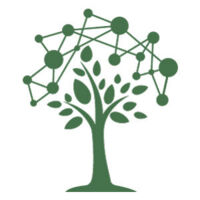

À propos
Accueil | À propos | Parcelles permanentes | Herbiers | Actualités | Données | Publications | Contact | English
La Mélanésie

La Mélanésie est une sous-région géographique et culturelle du Pacifique Sud-Ouest, composée de milliers d’îles situées entre l’équateur et le tropique du Capricorne. Du nord-ouest au sud-est, elle comprend les provinces indonésiennes de l’ouest de la Nouvelle-Guinée, les États indépendants de Papouasie-Nouvelle-Guinée, des Îles Salomon, du Vanuatu et des Fidji, ainsi que la Nouvelle-Calédonie, territoire français.
Les forêts couvrent plus des trois quarts des terres de Mélanésie. Elles abritent une biodiversité unique et contribuent à atténuer le réchauffement climatique en stockant du carbone. Elles sont aussi essentielles au bien-être des populations locales, en particulier en milieu rural, grâce aux nombreux services écosystémiques qu’elles rendent. Dans le contexte des changements globaux, ces forêts font face à de multiples menaces : conversion en terres agricoles, exploitation forestière, activités minières, incendies, cyclones, espèces envahissantes et changement climatique. Malgré leur importance et leur vulnérabilité potentielle, elles restent relativement peu étudiées.
La communauté scientifique locale travaillant sur l’écologie et la conservation des forêts mélanésiennes est réduite et géographiquement dispersée. Chercheurs et experts travaillent souvent de manière isolée, avec peu d’échanges entre pays, alors qu’ils font face à des problèmes similaires : gérer les effets des changements globaux en milieu insulaire, avec des effectifs et une expertise limités pour relever les défis de la conservation.
Objectifs
MELANOBS, l’observatoire mélanésien de la réponse des forêts aux changements globaux, est une réponse régionale à ces défis, qui associe collaboration et recherche au service de la conservation des forêts et des communautés mélanésiennes. Le projet vise à construire un réseau international de chercheurs et d’experts travaillant sur l’écologie et la conservation des forêts mélanésiennes, fondé sur la collaboration, le renforcement des capacités et l’équité.
Plus précisément, il vise à :
- renforcer les capacités grâce à des partenariats de recherche ;
- améliorer les connaissances sur la biodiversité forestière, par exemple en établissant des listes d’espèces à l’échelle de chaque île ;
- améliorer les connaissances sur le fonctionnement des forêts, par exemple en suivant la démographie des arbres (croissance, mortalité et recrutement).
Le projet repose sur deux piliers : l’installation et le suivi d’un réseau de parcelles forestières permanentes, et le renforcement de la collaboration entre les herbiers de la région.
Partenaires
MELANOBS réunit des partenaires aux profils variés : des organismes de recherche et universités (l’unité mixte de recherche AMAP, l’Université nationale des Îles Salomon, l’Université du Pacifique Sud, Adelaide University et le Jardin botanique de New York), des ONG (Endemia et NatureFiji-MareqetiViti) et des administrations (le ministère des Forêts et de la Recherche des Îles Salomon, le département des Forêts du Vanuatu, le ministère de la Pêche et des Forêts des Fidji et, en Nouvelle-Calédonie, la direction de l’Environnement de la province des îles Loyauté et le service de gestion des aires protégées de la province Sud). Parmi eux figurent les conservateurs des herbiers de la région.



Financeurs
La première phase de MELANOBS a été financée par l’Institut de recherche pour le développement (IRD) et par le ministère de l’Europe et des Affaires étrangères (MEAE), au titre du Fonds Pacifique pour la coopération régionale.
L’installation et le réinventaire des parcelles en Nouvelle-Calédonie ont également été soutenus par l’Agence nationale de la recherche (ANR) dans le cadre du PEPR FORESTT (projet MONITOR).


